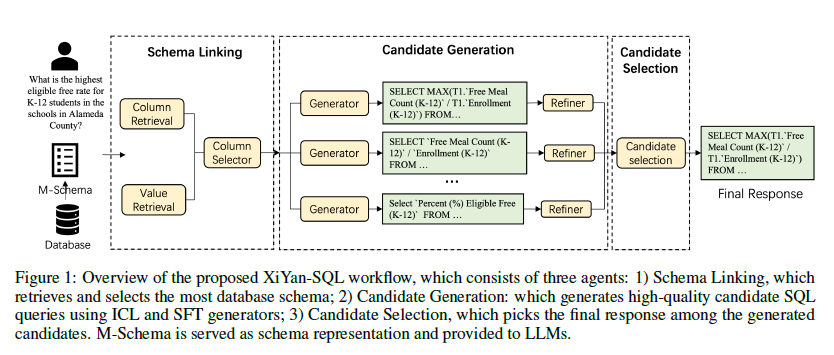
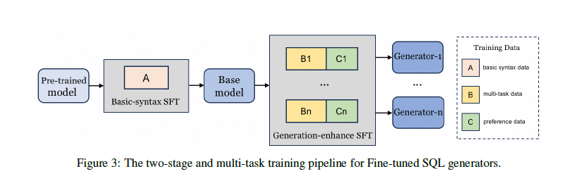

A Preview of XiYan-SQL: A Multi-Generator Ensemble Framework for Text-to-SQL https://arxiv.org/pdf/2411.08599
Abstract
- M-Schema, in-context learning(ICL)와 SFT 통합 소개
- 고품질의 후보를 생성하는 SFT 전략 소개
- ICL에서 특정 entities를 과도한 강조를 막는 예제 선택 방법 소개(Named entity recognition에 기반)
- SQL Refiner는 각 후보의 logical, syntactical error를 고쳐서 최적화를 함.
- SQL queries 간의 미묘한 차이를 구별하기 위해 selection 모델을 fine-tune을 함.
- 다양한 dialect datasets에서 좋은 성능을 보임.
1. Introduction
- LLM 기반의 NL2SQL에는 prompt engineering과 SFT의 두 가지 방법론이 있다. GPT-4에 기반한 prompt engineering은 multi-path generation(출력 여러개 생성)과 self-consistency에 의존해서 오버헤드가 크다. 작은 모델에 기반한 SFT는 복잡한 추론을 하지 못한다.
- multi-generator ensemble strategy를 가진 XiYan-SQL을 제안
2. Overall Framework

- 3가지 주요 components. 1) Schema Linking, 2) Candidate Generation, 3) Candidate Selection.
- Schema Linking : 필요한 데이터에 집중하기 위해 관련 column 선택, values 추출.
- 이 Schema Linking 한 결과는 contextual information. 이 contextual information를 M-Schema로 구성하고 Candidate Generation에 입력해 후보 SQL 생성.
- 최종적으로 Candidate Selection이 최종 SQL 결정
3. M-Schema
- LLM이 DB schema를 더 잘 이해하기 위해 M-Schema 소개.
- DB, tables, columns 간의 계층적 관계를 설명하고 identification을 위해 special tokens(【DB_ID】, … 등)도입.
- Table의 정보를 list로 표현, 각 요소는 tuple로 표현. 각 요소는 column을 설명, column명, 타입, 설명, value 예시가 있음. 그리고 “Primary Key”, “Foreign keys”도 명시.
- column 표현에는 데이터 타입, primary key marking, column 설명, value 예시가 포함.
- https://github.com/XGenerationLab/M-Schema 에 코드있음.
【DB_ID】 superhero
【Schema】
# Table : hero_power
[
(hero_id: INTEGER, Primary Key, the id of the hero Maps to superhero(id), Examples:[1,2,3]),
(power_id: INTEGER, the id of the power Maps to superpower(id), Examples:[1,18,6])
]
# Table : superpower
(
(id: INTEGER, Primary Key, the unique identifier of the superpower, Examples:[1,2,3]),
(power_name: TEXT, the superpower name, Examples:[Agility, Accelerated Healing, Lantern Power Ring])
)
【Foreign keys】
hero_power.power_id = superpower.id4. Schema Linking
- Schema Linking은 자연어 query와 DB schema, table, column, value와 연결시킨다. Retrival Module과 Column Selector로 구성
Retrival Module
- Chase-sql의 방법과 유사하게 values와 columns를 검색.
- few-shot examples를 포함한 prompt에 model에 물어서 keywords와 entities를 추출. 그 다음 keywords와 column 설명간 semantic similarity로 top-k를 retrieve를 한다. (관련된 column retrieve).
- Value retriever(실제 값 추출)는 LSH(Locality Sensitive Hashing)과 semantic similarity를 기반으로 하는 2단계 retrieval 전략을 쓴다. 최종 선택된 스키마는 column retriever와 value retriever의 결과물을 union set을 사용.
- (메모) 컬럼과 값 기준으로 선택. 테이블 선택X
Column Selector
- Column Seletor는 tables와 columns를 줄이는 것이 목표. 앞 단계에서 retrived schema를 가지고 M-schema를 만들고, few-shot prompt를 구성해 LLM에게 유저 쿼리와 관련된 컬럼을 평가하도록 함.
5. Candidate Generation
- 고품질을 가진 다양한 SQL 후보를 생성하기 위해 다양한 generators 도입. (모델)
- 다양한 syntactic styles을 가진 SQL 후보 쿼리를 생성하기 위해 SFT와 ICL을 적용. 그리고 Refiner는 SQL 쿼리를 개선함. (메모) syntatic styles은 같은 결과를 내지만 문법 구조가 다른 것.

5.1 Fine-tuned SQL Generator
- 핵심 목표는 정밀하고 다양한 SQL 후보들을 생성하는 것.
Basic-syntax training
- 사전 학습된 모델을 기본적인 SQL 패턴과 문법에 특화하도록 SFT. SQL dialect-agnostic 데이터(수 만개)를 학습해서 포괄적으로 문법을 커버.
Generation-enhance training
- 모델의 semantic 이해와 문법 스타일 선호도 향상을 목표로 SFT.
- multi-task data를 학습해서 유저의 질문과 SQL 쿼리간의 관계를 더 잘 이해.
- 유저의 질문을 SQL 쿼리로 변환하는 일반적인 task.
- SQL 쿼리를 유저의 질문으로도 변환해서 잠재적인 질문도 추론 할 수 있도록 설계.
- SQL을 주어지고 evidence 후보 중 가장 관련있는 evidence를 선택. evidence = DB 스키마와 관련 contextual information 전체
- SQL 식별 및 재생성 tasks. execution feedback으로 최적화용.
- n개의 LLM을 활용해 원래 쿼리의 의미를 바꾸지 않고 여러 가지 방식으로 재구성. 그래서 샘플 데이터를 여러 문법 스타일을 가진 쿼리로 확장할 수 있었음. 이 데이터로 SFT.
- 이 방법으로 모델 하나에 하나의 SQL dialect를 타겟할 수도 있고, 여러 SQL dialect를 커버 하도록 학습할 수 있다. 응용에 따라 다름.
5.2 ICL SQL Generator
- ICL에서는 적절한 examples을 prompt에 추가하는 것이 좋다. (SQL examples)
- 유저의 질문(여기서는 test set)과 training set의 질문과 skeleton similarity를 계산해서 example selection을 한다. 개체명은 NLTK를 사용해 special token으로 마스킹을 한다. 예를들어 “America”, “China”를 “
<country>”로 마스킹. 열거형 값 같은 것들은 컬럼 이름으로 대체. 이 방법은 개체에 너무 집중하는 것을 방지하고 유사한 질문 구조를 가진 예시를 더 잘 찾는다. training과 test sets의 마스킹한 질문을 embedding을 계산, 그리고 similarity를 계산해서 top-K의 examples를 training set에서 선택. - 하나의 테이블만 참조하는 SQL example은 여러 테이블을 참조하는 SQL generation에 도움 안되는 것을 확인. 그래서 schema linking으로 여러 테이블을 사용해야 한다면 여러 테이블을 사용하는 SQL examples만 선택.
- similarity threshold로 질문당 최대 5개의 examples를 선택했다.
- Bird, Spider와 같은 벤치마크의 train set과 test set의 DB는 중복되지 않아서 prompt에 schema를 포함하는 것이 도움이 됨. 선택된 SQL example의 테이블에서 최소한의 컬럼만 제공.
5.3 SQL Refiner
- 생성된 후보 SQL은 logical이나 syntactical errors를 필연적으로 가진다. 그래서 schema-related context를 가지고 생성된 SQL 쿼리와 실행 결과를 가지고 교정(생성)을 한번 더 한다.
- 원래 SQL과 교정된 SQL 둘 다 selection model에 제출될 수 있다.
- (메모) 논문에는 ChatGPT와 같은 LLM을 사용했다는 말이 없지만 ChatGPT를 사용한 것 같음.
6. Candidate Selection
- 대부분의 방법론이 self-consistency를 도입하지만 모든 쿼리가 inconsistent 한 경우, 가장 consistent 결과가 틀렸을 경우에 한계를 가짐. (메모, 회사에서의 실험도 같은 질문으로 여러번 생성했을때 30%~40%의 쿼리가 더 정확했음)
- 그래서 selection 모델로 판별. SQL 실행 결과를 그룹으로 묶어서 inconsistent samples를 뽑아 후보 set으로 만듬. 그리고 contextual information와 후보 set을 가지고 가장 reasonable한 후보를 선정. 이 부분에서 prompt-based LLM을 사용하지 않고 fine-tuning한 모델을 selection 모델로 사용해서 후보 SQL간 뉘앙스를 더 잘 구별하게 한다.
- 다양한 문법적 선호도를 조절하기 위해 selection 모델의 training data를 의역(paraphrasing, SQL)했다.
7. Experiments
- Spider (89.65%), Bird (75.63%), SQL-Eval (69.86%), NL2GQL (41.20%)에서 SOTA 성능 달성.
- GPT-4o, DeepSeek, Claude 3.5 Sonnet, Gemini 1.5 Pro 기준으로 M-Schema 사용시 보통의 DDL Schema보다 약 2% 더 정확하다.
- Schema Linking을 사용하면 실행 정확도가 2.15% 향상됨.
- Candidate Selection 모델이 없을 경우 성능이 2.74% 감소하여 Selection 모델의 중요성을 입증.
A. SQLite Example
<DATABASE SCHEMA>
【DB_ID】 california_schools
【Schema】
# Table: schools
[
(CDSCode:TEXT, CDSCode, Primary Key, Examples: [01100170000000, 0100170109835, 01100170112607]),
(School: TEXT, School, Examples: [FAME Public Charter]),
(GSserved:TEXT, It is the lowest grade and the highest grade of student enrollment as reported in the most
recent certified CALPADS Fall 1 data collection. Only K-12 enrollment is reported through CALPADS. This
field may differ from the grade span offered., Examples: [K-12, 9-12, K-7]),
(AdmFNamel:TEXT, administrator's first name, Examples: [Kacey, L Karen, Laura, Clifford],
(AdmLNamel:TEXT, administrator's last name, Examples: [Gibson, Fisher Gibson, Free, Freeeman, Monroe,
Robell, Thompson])
]
# Table: fipm
[
(CDSCode:TEXT, CDSCode, Primary Key, Examples: [01100170109835, 0110017012607, 0110017018489),
(Enrollment (K-12):REAL, Enrollment (K-12), Examples: [1087.0, 395.0, 244.0]),
(Enrollment (Ages 5-17):REAL, Enrollment (Ages 5-17), Examples: (1070.0, 376.0, 230.0]),
(Free Meal Count (Ages 5-17):REAL, Free Meal Count (Ages 5-17), Examples: (553.0, 182.0, 128.0)),
(FRPM Count (Ages 5-17):REAL, Examples: (702.0, 182.0, 168.0])
]
【Foreign keys】
frpm.CDSCode=schools.CDSCode
<Question>
What is the free rate for students between the ages of 5 and 17 at the school run by Kacey Gibson
<Evidence>
Eligible free rates for students aged 5-17 = "Free Meal Count (Ages 5-17)" / “Enrollment (Ages 5-17)"
<Generated SQL>
SELECT
(12.’Free Meal Count (Ages 5-17)’ /T2."Enrollment (Ages 5-17)') AS Free Rate
FROM
schools AS T1
JOIN
frpm AS T2 ON T1.CDSCode = T2.CDSCode
WHERE
T1.AdmFNamel = 'Kacey' AND T1.AdmLNamel
<GT SQL>
SELECT CAST(T2.’Free Meal Count (Ages 5-17)’ AS REAL) / T2.’Enrollment (Ages 5-17)’ FROM schools
ASTI INNER JOIN frpm AS T2 ON T1.CDSCode = T2.CDSCode WHERE T1.AdmFNamel ='Kacey' AND
T1.AdmLNamel ='Gibson'D. ICL Generator Prompt
You are a SQLite expert. You need to read and understand the following database schema description, as well as the evidence that may be used, and use your SQLite knowledge to generate SQL statements to answer user questions.
The following examples are for your reference.
【DB_ID】 retails
【Schema】
# Table: supplier
[
(s_suppkey:INTEGER, unique id number identifying the supply, Primary Key, Examples: [1, 2,3),
(s-nationkey:INTEGER, nation key of the supply, Examples: [13, 5, 22])
]
# Table: nation
[
(n_nationkey:INTEGER, unique id number identifying the nation, Primary Key, Examples: (0, 1, 2)),
(n_name:TEXT, name of the nation, Examples: (ALGERIA, ARGENTINA, BRAZIL)
]
【Foreign keys】
suppliers_nationkey=nation.n_nationkey
【Evidence】
name of the country refers to n_name; the highest debt refers to min(s_acetbal)
【Question】
What is the name of the country of the supplier with the highest debt?
\```sql
SELECT T2.n_name FROM supplier AS TI INNER JOIN nation AS T2 ON T1.s_nationkey = T2.n_nationkey ORDER BY
Tl.s_suppkey DESC LIMIT 1
\```
Question Solved.
=============
【DB_ID】 california_schools
【Schema】
# Table: schools
[
(CDSCode:TEXT, CDSCode, Primary Key, Examples: (0110017000000, 0100170109835, 0110017012607),
(MailStreet: TEXT, MailStreet, Examples: [701 East Main Street, 501 West Main Street, Sunset and Cambridge Streets, 313
West Winton Avenue),
(MailStrAbr:TEXT, Examples: [106 East Manchester Ave., 313 West Winton Ave.]),
(MailCity:TEXT, Examples: [Hayward, Newark, Oakland]),
(MailZip: TEXT, Examples: (94544-1136, 94560-5359, 94612)),
(MailState:TEXT, Examples: [CA])
]
# Table: frpm
[
(CDSCode:TEXT, CDSCode, Primary Key, Examples: (0100170109835, 0110017012607, 01100170118489)),
(School Code-TEXT, School Code, Examples: [0109835, 0112607, 0118489)),
(FRPM Count (K-12):REAL, Free or Reduced Price Meal Count (K-12), Examples: [715.0, 186.0, 175.0))
]
【Foreign keys】
frpm.CDSCode=schools.CDSCode
【Evidence】
【Question】
What is the unabbreviated mailing street address of the school with the highest FRPM count for K-12 students?
\```sqlE. Candidate Selection Prompt
You are a SQLite expert. Regarding the Question, there are {CANDIDATE_NUM} candidate SQL along with their Execution result in the database (showing the first 10 rows).
You need to compare these candidates and analyze the differences among the various candidate SQL. Based on the provided Database Schema, Evidence, and Question, select the correct and reasonable result.
【Database Schema】
{DATABASE_SCHEMA}
【Evidence】
the oldest card refers to MIN(originalReleaseDate); mythic card refers to rarity = 'mythic’; legal play refers to status = ‘legal’; play format refers to format
【Question】
When was the oldest mythic card released and what are its legal play formats?
=============
Candidate A
【SQL】
SELECT T1.originalReleaseDate, T2.format FROM cards AS T1 INNER JOIN legalities AS T2 ON T1.uuid = T2.uuid WHERE TL rarity = 'mythic' AND T2.status = 'Legal' ORDER BY T1.originalReleaseDate LIMIT 1
【Execution result】
[(None, 'commander’)]
********
Candidate B
【SQL】
SELECT T1.originalReleaseDate, T2.format FROM cards AS T1 INNER JOIN legalities AS T2 ON T1.uuid = T2.uuid WHERE TL rarity = 'mythic' AND T2.status = 'legal' ORDER BY T1.originalReleaseDate LIMIT 1
【Execution result】
[(None, 'commander’)]
********
Candidate C
【SQL】
SELECT MIN(c.originalReleaseDate) AS oldest_mythic_release_date, l.format
FROM cards AS c
JOIN legalities AS l ON c.umid = l.uuid
WHERE c.rarity ='mythic' AND status = ‘Legal’
GROUP BY l.format
ORDER BY oldest_mythic_release_date
LIMIT 1;
【Execution result】
[('2009/4/25', 'commander’)]
Please output the selected candidate as "A" or "B" or "C"F. Refiner Prompt
You are a SQLite expert. There is a SQL query generated based on the following Database Schema description and the potential Evidence to respond to the Question. However, executing this SQL has resulted in an error, and you need to fix it based on the error message. Utilize your knowledge of SQLite to generate the correct SQL.
【Database Schema】
{DATABASE_SCHEMA}
【Evidence】
{evidence}
【Question】
If there are any, what are the websites address of the schools with a free meal count of 1,900-2,000 to students aged 5-17? Include the name of the school.
【SQL】
\```
SELECT T2. Website, T2.School FROM frpm AS T1 INNER JOIN schools AS T2 ON T1.CDSCode = T2.CDSCode WHERE T1.`Free Meal Count (Ages 5-17)` BETWEEN 1900 AND 2000
\```
[Execution result]
exist None value
[(None, ‘South Gate Middle’), (‘http://Ihs.lynwood.edlioschool.com’, ‘Lynwood High’), (‘www.auhsd.us/katella’,'Katella High’)]
\```sql